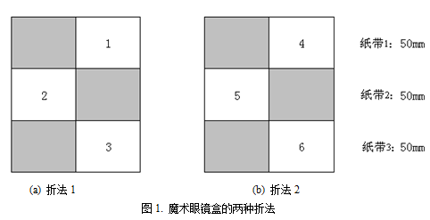
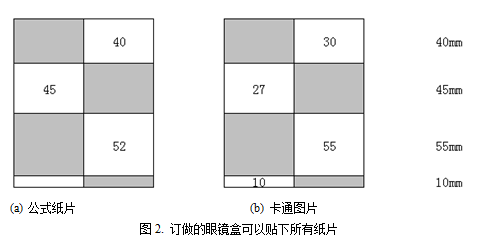

小花买了一只很有意思的魔术眼镜盒。眼镜盒盖由两半组成，每半水平分割为若干条纸带，如图1所示（左半为盒
子底部，右半为盒子顶部）。灰色表示盒子的表面，白色表示空白区域。下图的眼镜盒有3个纸带，每个纸带的长
度均为50(mm)，但其他眼镜盒可能有不同数目的纸带，每条纸带的长度也不一定一样

眼镜盒的特别之处在于它有两种折法。图1的(a)和(b)就是它的两种折法，第一种折法把区域1，2，3暴露在盒子的
表面，而第二种折法把区域4，5，6暴露在盒子的表面。如果一个眼镜盒有n条纸带，那么折法1暴露出来的区域编
号为1，2，...，n，折法2暴露出来的区域编号为n+1，n+2，...，2n。第i个区域和第n+i个区域是全等的。在本题
中，你不需要了解两种折法是怎么互相转化的。小花有两种正方形纸片：公式纸片和卡通图片。她想把公式纸片贴
在区域1，2，3中，而把卡通图片贴在4，5，6中，在学习的时候使用折法1，休息的时候使用折法2。每张纸片都必
须完全位于区域的内部，纸片边界可以和区域边界重合。不同的纸片必须贴在不同的区域，有的区域内也可以不贴
纸片。标准的眼镜盒长度为150，宽度为55，面积为8250，分为长度相等的三个纸带，因此每个白色区域的尺寸为5
5×50。小花有3张公式纸片，边长分别为40，45和52；4张卡通纸片，边长分别为10, 27, 30, 55，只能在正面放4
0和45，反面放10，27和30。显然，标准眼镜盒并不能满足小花的要求。好在眼镜盒公司允许用户订做自己的眼镜
盒，盒子长度、宽度、纸带数目和每条纸带的长度都是可以任意修改的，即长度可以不是150，宽度也可以不是55
。小花发现如果眼镜盒子尺寸不变，而换四条长度为40, 45, 55和10的纸带，所有纸片就都能放下了，如图2所示
。

面积越大的眼镜盒越贵，因此小花希望买一个面积不超过s的眼镜盒。应该如何选购眼镜盒、设计纸带和贴小纸片
，使得眼镜盒上的小纸片总数尽量多？纸片最多的前提下，眼镜盒的面积最小是多大？